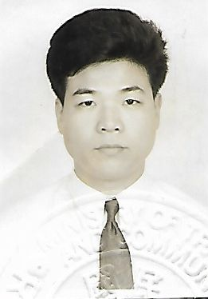

學歷 :
市立小學
市立中學
省立高中
國立大學 機械系畢業
經歷 :
90/6 軍中退伍
91/1~92/5 全新電機股份有限公司 / 機構工程師
系統機構件建立、系統部件整合。
92/5~93 / 9全新電機股份有限公司 / 專案開發部課長
協助銷售部門確立客戶規格需求、整合各部門之間工作、提供有競爭性方案，協助業務部門爭取訂單。
93/9 ~ 96/10全新電機股份有限公司 / 市場部經理
負責對客戶端提案，協助各產業工廠端完成自動產線方案。
100/3~102/8 精測光電股份有限公司 營業處 / 協理
亞太市場銷售推廣、客製化產品開發、規格確立及接單。
102/8~至今 泳泓工業股份公司 銷售處 / 處長
全球市場銷售推廣。
個人專長：產線自動化規劃建置、客製化整合專案開發、市場銷售推廣、英語/日語專案撰寫/提案。
個人興趣：游泳、登山、戶外休閒運動、古典音樂、投資理財。